Joost_et_al.RmdThis is an example of clustering, marker identification and pseudotime inference on a set of skin cells.
Load and log transform the data
library(RSoptSC)
#> Warning: replacing previous import 'circlize::degree' by 'sna::degree' when
#> loading 'RSoptSC'
data("GSE67602_Joost")
logdata <- log10(GSE67602_Joost$data + 1)# clean the gene names
gene_names <- GSE67602_Joost$gene_names
spikein <- grep('ERCC', gene_names)
gene_names <- gene_names[-spikein]
# clean the data
logdata <- logdata[-spikein,]Apply number of features and exclusion threshold
gene_expression_threshold <- 0.03
n_features <- 3000
filtered_data <- SelectData(logdata, gene_expression_threshold, n_features)Run L2R2 on the processed data, outputting the number of iterations and value of the objective.
sim <- SimilarityM(lambda = 0.05, data = filtered_data$M_variable)[1] “Iter Err” 1, 20.597435 2, 19.520815 3, 18.476136 4, 17.491670 5, 16.569212 6, 15.705525 7, 7.770185 8, 0.415020 9, 0.356815 10, 0.339246 11, 0.328628 12, 0.318293 13, 0.307808 14, 0.297460 15, 0.287398 16, 0.277677 17, 0.268311 18, 0.253743 19, 0.232315 20, 0.204575 21, 0.170748 22, 0.130527 23, 0.083237 24, 0.041469 25, 0.100519 [1] “not reach epsilon”
Compute distances on the similarity matrix. If the truncated graph has multiple components, join them to improve inter-cluster distance estimation.
mapped <- RepresentationMap(similarity_matrix = sim$W,
join_components = TRUE)[1] “computing flat embedding”
Infer cluster number using spectra of the ensemble Laplacian.
clust <- CountClusters(data = sim$W)
n_clusters <- clust$nIn this analysis, we obtain bounds on the number of clusters, where the lower bound is equal to the number of zero eigenvalues and the upper bound is the index of the eigenvalue preceding the largest eigengap. We take this value as the cluster number here.
plot(c(1:20),
clust$eigs$val[1:20],
xlab = NA,
ylab = 'eigenvalues',
main = 'Eigenvalues of the Graph Laplacian')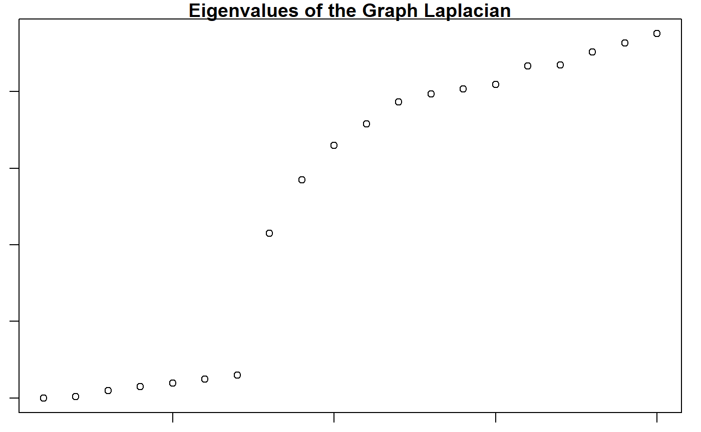
Factor the similarity matrix such that W = HxH’, using the computed cluster number for the rank of H.
res <- NMF::nmf(x = sim$W,
rank = n_clusters,
method = 'lee',
seed = 'nndsvd',
.options = 'nP');
H <- NMF::basis(res)Assign cluster labels to the cells.
Cells are labeled by cluster membership and plotted on low-dimensional embedding (t-SNE) of the similarity matrix.
# plot clusters
FeatureScatterPlot(flat_embedding = mapped$flat_embedding,
feature = as.factor(labels),
title = "NMF Cluster Labeling",
subtitle = "t-SNE Embedding",
featurename = "Cluster ID")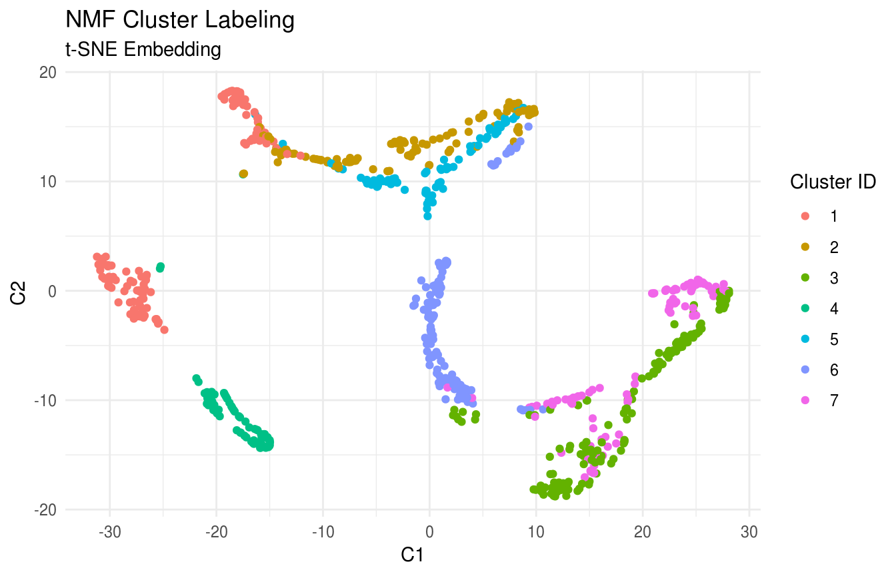
As described in Joost et al (2016), Subpopulations including Basal, IFE-DI, IFE-DII, IFE-KI, IFE-KII were identified by standard techniques.
true_labels <- RSoptSC::GSE67602_Joost$annotation
# plot clusters
FeatureScatterPlot(flat_embedding = mapped$flat_embedding,
feature = as.factor(true_labels),
title = "True Labeling",
subtitle = "t-SNE Embedding",
featurename = "Annotated Cell Types")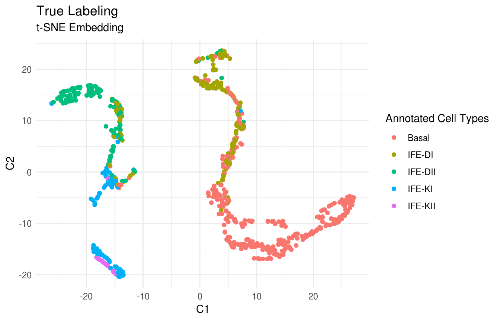
Previously, we clustered the cells using L2R2/Sym-NMF, now we analyze the markers of the clusters. We look at the normalized expression values of all genes using pre-selection parameters similar to the pre-clustering selection parameters. The top six markers selected as described in Wang et. al. As expected, markers Krt14, Krt10, and Lor are inferred for clusters overlapping with IHC-based Basal, Differentiated (IFE-DI, IFE-DII), and Keratinized (IFE-DI, IFE-DII) cell annotations.
library(dplyr)
#>
#> Attaching package: 'dplyr'
#> The following object is masked from 'package:Biobase':
#>
#> combine
#> The following objects are masked from 'package:BiocGenerics':
#>
#> combine, intersect, setdiff, union
#> The following objects are masked from 'package:stats':
#>
#> filter, lag
#> The following objects are masked from 'package:base':
#>
#> intersect, setdiff, setequal, union
library(RColorBrewer)
n <- 6
n_cells <- length(labels)
markers <- GetMarkerTable(counts_data = GSE67602_Joost$data,
cluster_labels = labels,
H = H,
gene_expression_threshold = 6,
n_features = 20000)
sorted_cell <- sort.int(labels, index.return = TRUE)
markers_table <- as.data.frame(markers)
sortedmarkers <- dplyr::arrange(markers_table, clusterId, desc(geneScore))
sorted_gene_table <- tibble::as_tibble(sortedmarkers) %>% group_by(clusterId) %>% top_n(n, geneScore)
sorted_gene <- sorted_gene_table$geneID
plot_data <- GSE67602_Joost$data[sorted_gene, sorted_cell$ix]
# plot_data[plot_data == 0] <- 1
# plot_data <- scale(plot_data)
rlabs <- GSE67602_Joost$gene_names[sorted_gene]
clabs <- c(rep(NA, n_cells))
counts <- as.matrix(table(labels))
accumulator <- matrix(1, n_clusters, n_clusters)*lower.tri(matrix(1, n_clusters, n_clusters), diag = TRUE)
last_cells <- accumulator %*% counts
offset <- floor(counts/2)
labeled_columns <- last_cells - offset
clabs[labeled_columns] <- c(1:n_clusters)
p <- gplots::heatmap.2(log10(plot_data+1),
col = rev(brewer.pal(11,"RdBu")),
trace = 'none',
dendrogram='none',
Rowv=FALSE, Colv=FALSE,
labCol = clabs,
labRow = rlabs,
srtCol = 0,
cexCol =1,
cexRow = .7,
lhei = c(1,3.5),
key.title = NA,
scale = "row")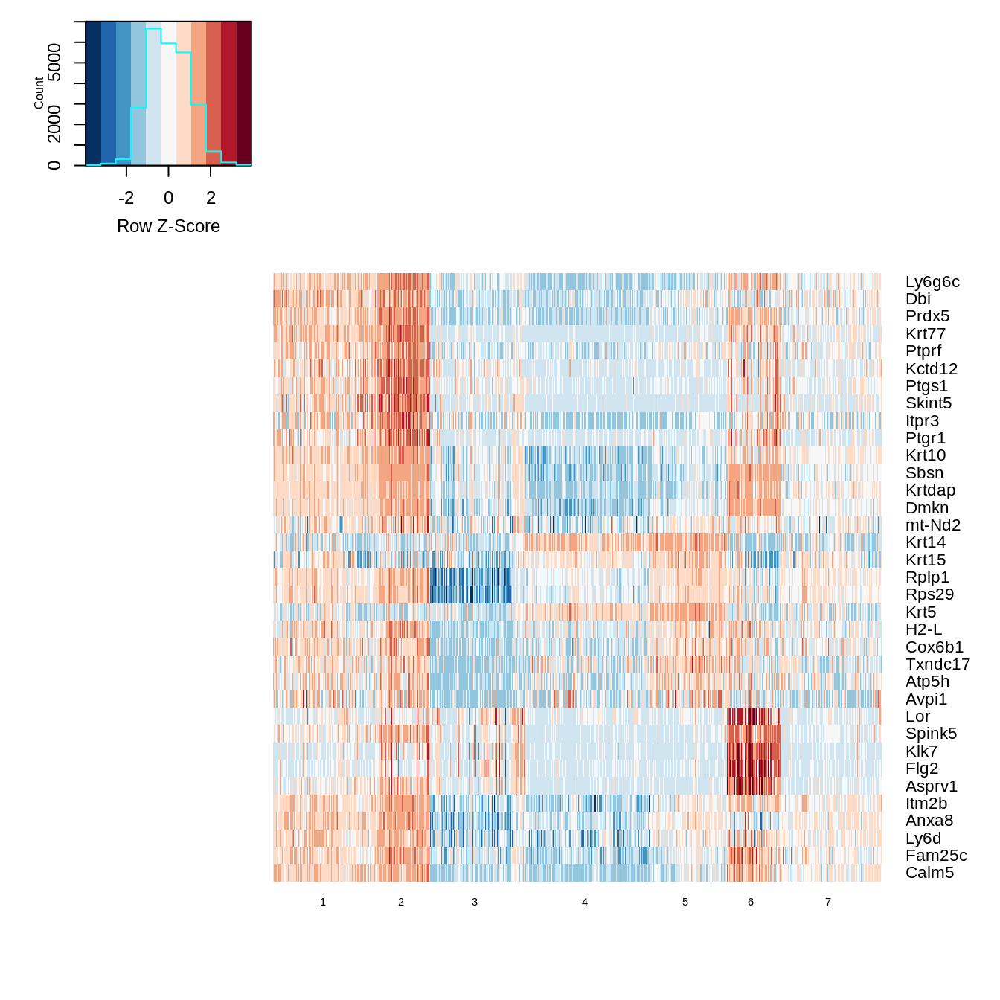
Compute cluster-cluster graph and find the root cluster.
cluster_ptime <- FindRootCluster(cluster_labels = labels,
flat_embedding = mapped$flat_embedding,
dist_graph = mapped$dist_graph,
dist_flat = mapped$dist_flat,
reverse = TRUE)Compute the cell-cell graph and find the root cell.
root_cell <- FindRootCell(use_flat_dist = FALSE,
cluster_order_by = "distance",
cell_order_by = "distance",
graph_cluster_mst = cluster_ptime$cluster_mst,
dist_graph = mapped$dist_graph,
dist_flat = mapped$dist_flat,
cluster_labels = labels,
root_cluster = cluster_ptime$root_cluster)Compute the directional minimum spanning tree on the cluster-cluster graph for visualization.
library(ggnetwork)
#> Loading required package: ggplot2
cluster_predecessors <- GetPredecessors(cluster_ptime$cluster_mst, cluster_ptime$root_cluster)
cluster_dtree <- GetDominatorTree(cluster_predecessors, cluster_ptime$graph_cluster)
PlotLineage(cluster_dtree)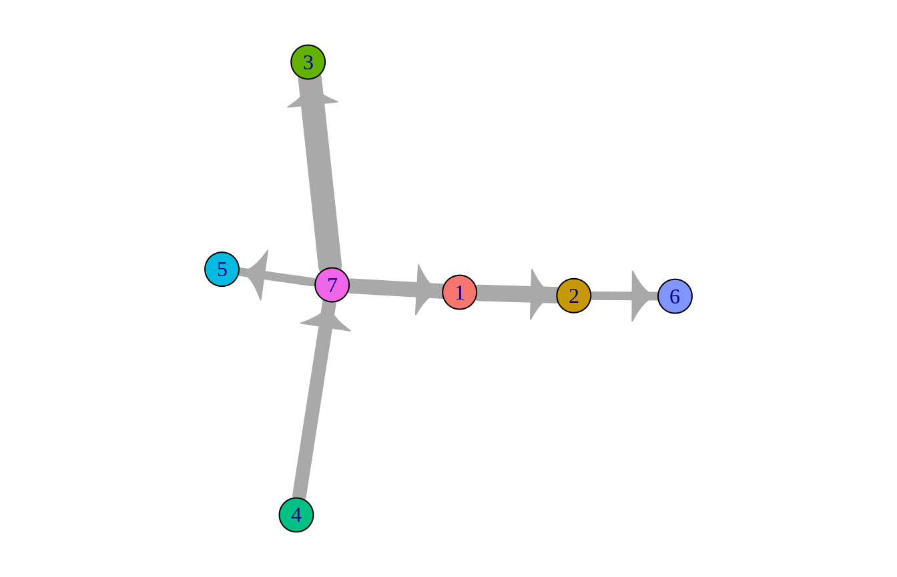
Compute the path-length vector from root, and plot the cells in the previously computed low-dimensional embedding.
pseudotime <- mapped$dist_graph[root_cell,]
# plot pseudotime
FeatureScatterPlot(flat_embedding = mapped$flat_embedding,
feature = pseudotime,
title = "Pseudotime Labeling",
subtitle = "t-SNE Embedding",
featurename = "Relative L2R2 Distance from Root")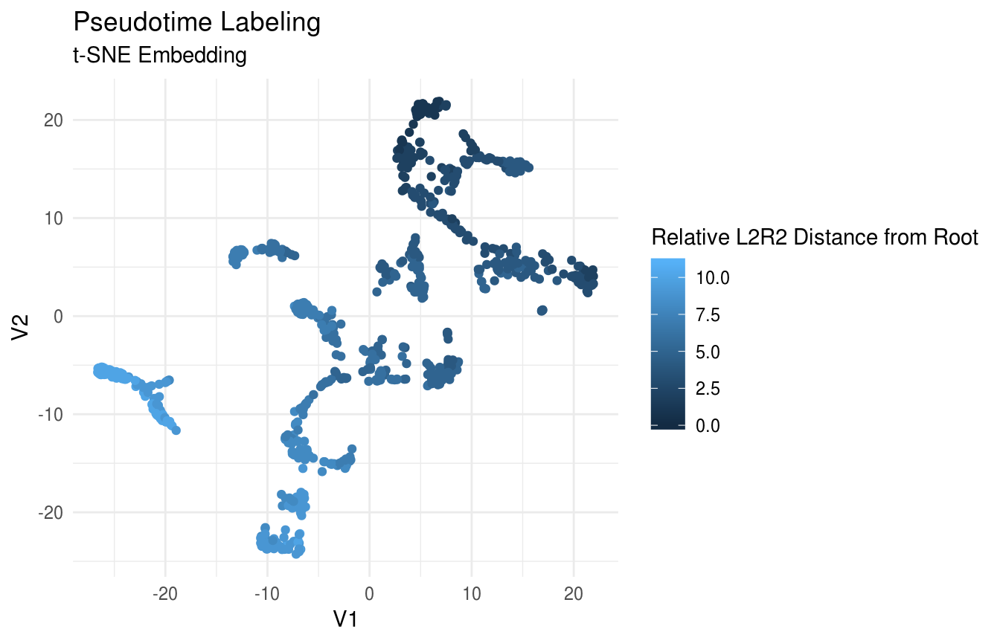
Plot Expression of Krt14, Krt10, and Lor in t-SNE Space:
gene_index <- which(gene_names == 'Krt14')
labeling <- logdata[gene_index,]
# plot features
FeatureScatterPlot(flat_embedding = mapped$flat_embedding,
feature = labeling,
title = "Krt14 Expression",
subtitle = "t-SNE Embedding",
featurename = "Log Krt14 Expression")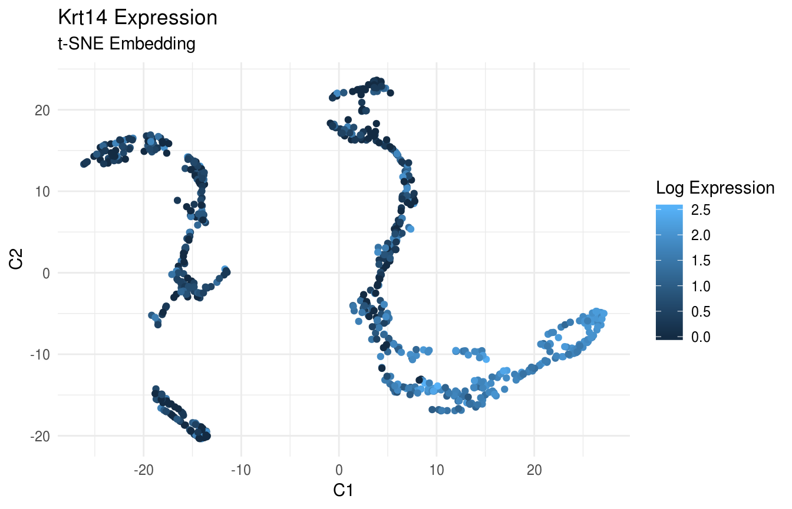
gene_index <- which(gene_names == 'Krt10')
labeling <- logdata[gene_index,]
# plot features
FeatureScatterPlot(flat_embedding = mapped$flat_embedding,
feature = labeling,
title = "Krt10 Expression",
subtitle = "t-SNE Embedding",
featurename = "Log Krt10 Expression")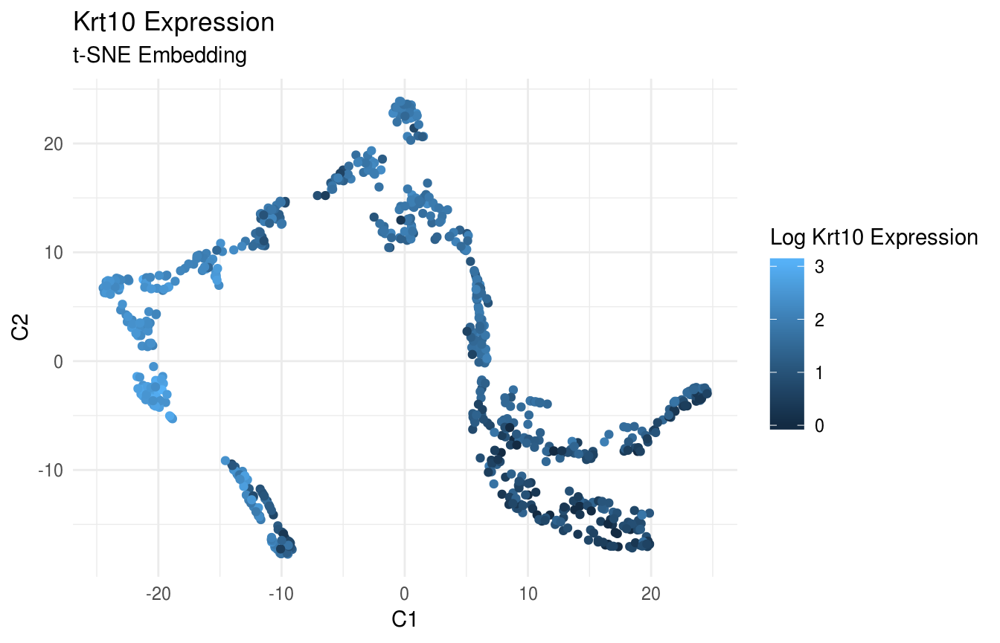
gene_index <- which(gene_names == 'Lor')
labeling <- logdata[gene_index,]
# plot features
FeatureScatterPlot(flat_embedding = mapped$flat_embedding,
feature = labeling,
title = "Lor Expression",
subtitle = "t-SNE Embedding",
featurename = "Log Lor Expression")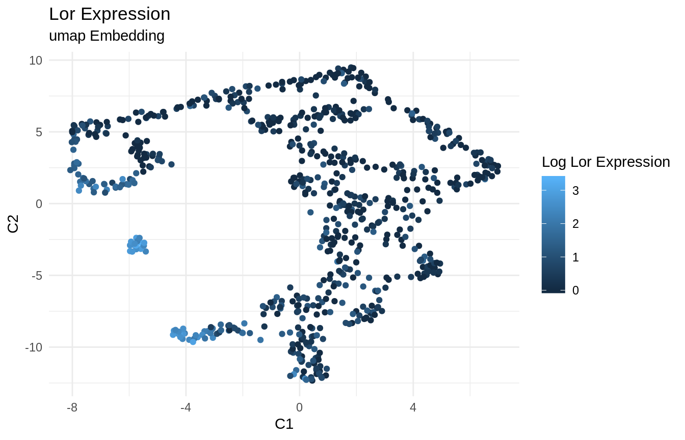
Violin Plot of Krt14 expression. Note strong expression of the basal compartment (clusters 1 and 6):
ViolinPlotExpression(data = logdata,
gene_names = gene_names,
labels = labels,
gene_name = "Krt14")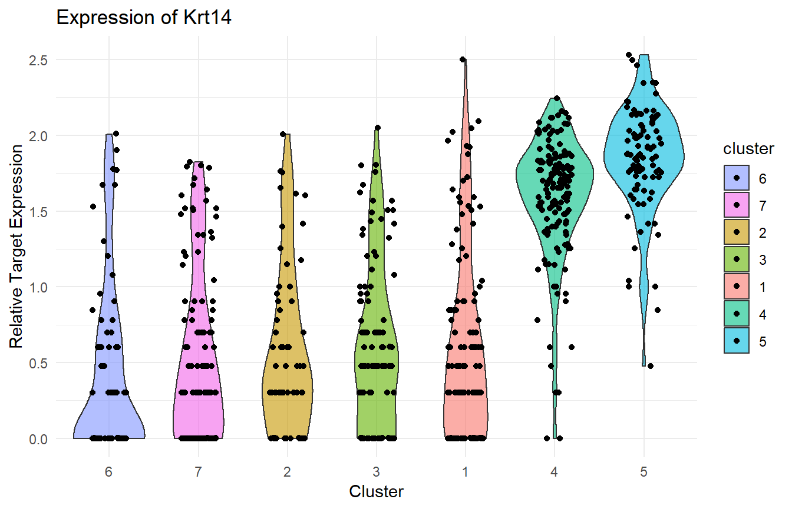 Violin Plot of Krt10 expression. Note strong expression in the IFE-DI/DII compartments (clusters 2, 4, 5, 7):
ViolinPlotExpression(data = logdata,
gene_names = gene_names,
labels = labels,
gene_name = "Krt10")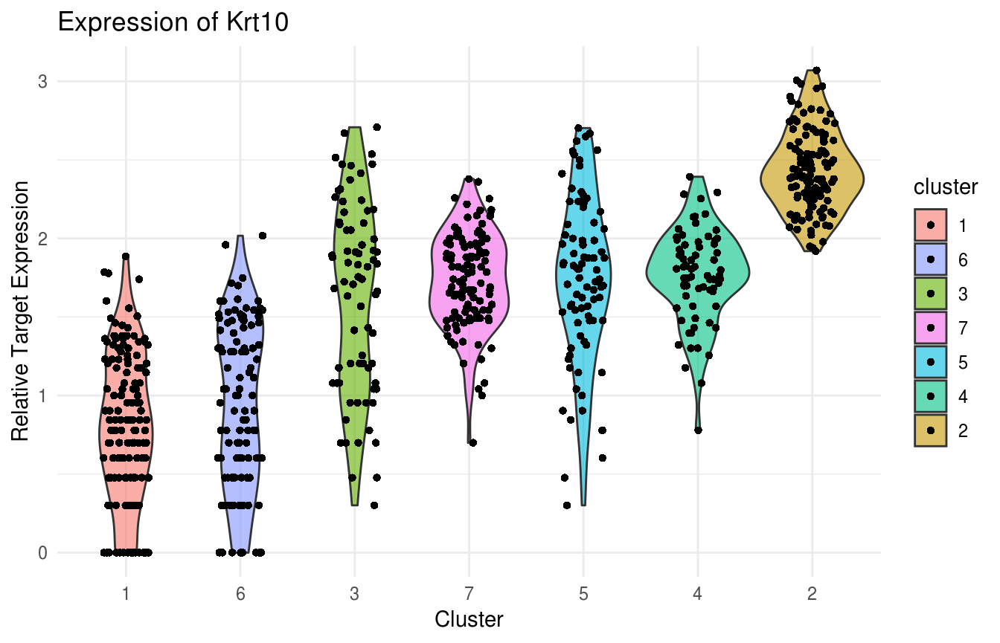 Violin Plot of Lor expression. Note strong expression in cluster 3, which completely encompasses IFE-KI/KII compartments:
ViolinPlotExpression(data = logdata,
gene_names = gene_names,
labels = labels,
gene_name = "Lor")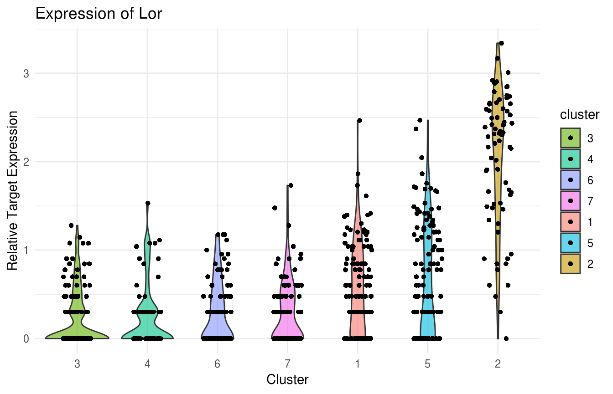
We present a family of ligan-receptor pairs along with their up/down-regulated targets. We compute the probability of intercellular interaction based on this pathway.
ligands <- list(Tgfb1 = list(Tgfbr1 = list(up = list('Zeb2','Smad2','Wnt4','Wnt11','Bmp7','Sox9','Notch1'),
down = list('Crebbp','Fos','Id1','Jun','Runx1','Smad1','Smad5','Sox4','Cdh1')),
Tgfbr2 = list(up = list('Zeb2','Smad2','Wnt4','Wnt11','Bmp7','Sox9','Notch1'),
down = list('Crebbp','Fos','Id1','Jun','Runx1','Smad1','Smad5','Sox4','Cdh1'))),
Tgfb2 = list(Tgfbr1 = list(up = list('Zeb2','Smad2','Wnt4','Wnt11','Bmp7','Sox9','Notch1'),
down = list('Crebbp','Fos','Id1','Jun','Runx1','Smad1','Smad5','Sox4','Cdh1')),
Tgfbr2 = list(up = list('Zeb2','Smad2','Wnt4','Wnt11','Bmp7','Sox9','Notch1'),
down = list('Crebbp','Fos','Id1','Jun','Runx1','Smad1','Smad5','Sox4','Cdh1'))))
Pmats <- GetSignalingPartners(logdata,
gene_names,
ligands)ligand receptor 1 Tgfb1 Tgfbr1 [1] “a,b,g 1” [1] “K 1” [1] “D 1” ligand receptor 17 Tgfb1 Tgfbr2 [1] “a,b,g 2” [1] “K 2” [1] “D 2” ligand receptor 33 Tgfb2 Tgfbr1 [1] “a,b,g 3” [1] “K 3” [1] “D 3” ligand receptor 49 Tgfb2 Tgfbr2 [1] “a,b,g 4” [1] “K 4” [1] “D 4”
Now plot the previous result as a circos plot on the cells in the dataset, ordered by cluster.
sigonly = FALSE # If true => input is only signaler cells, and P will not be thresholded
subsample = TRUE
threshold = 0.05
nsample = 100
plotSig(P = Pmats$P_agg,
cluster_label = labels,
threshold = threshold,
sigonly = sigonly,
subsample = subsample,
nsample = nsample,
plottitle = "Network Inference on the Activation and Suppression of Tgfb Targets ")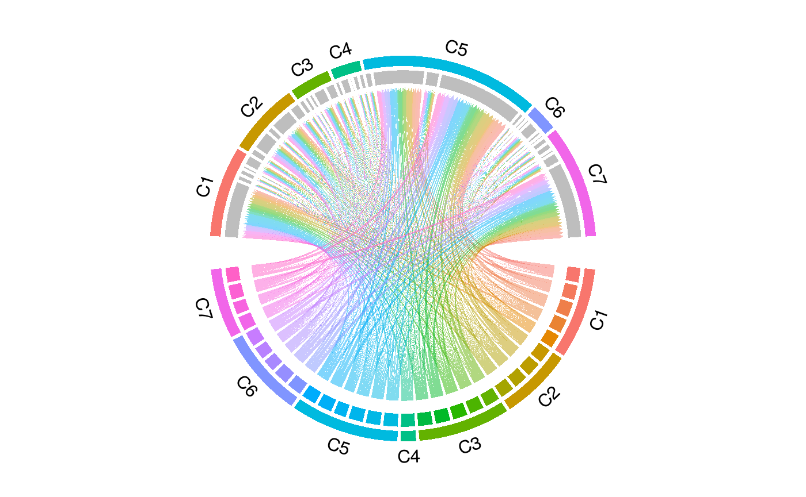